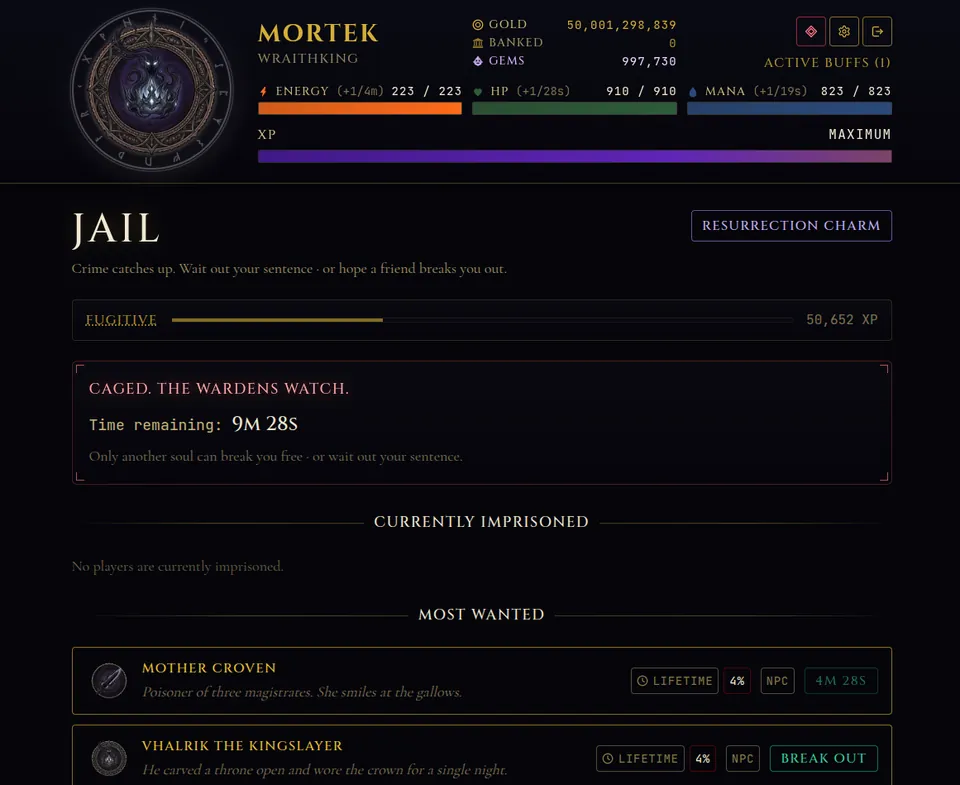
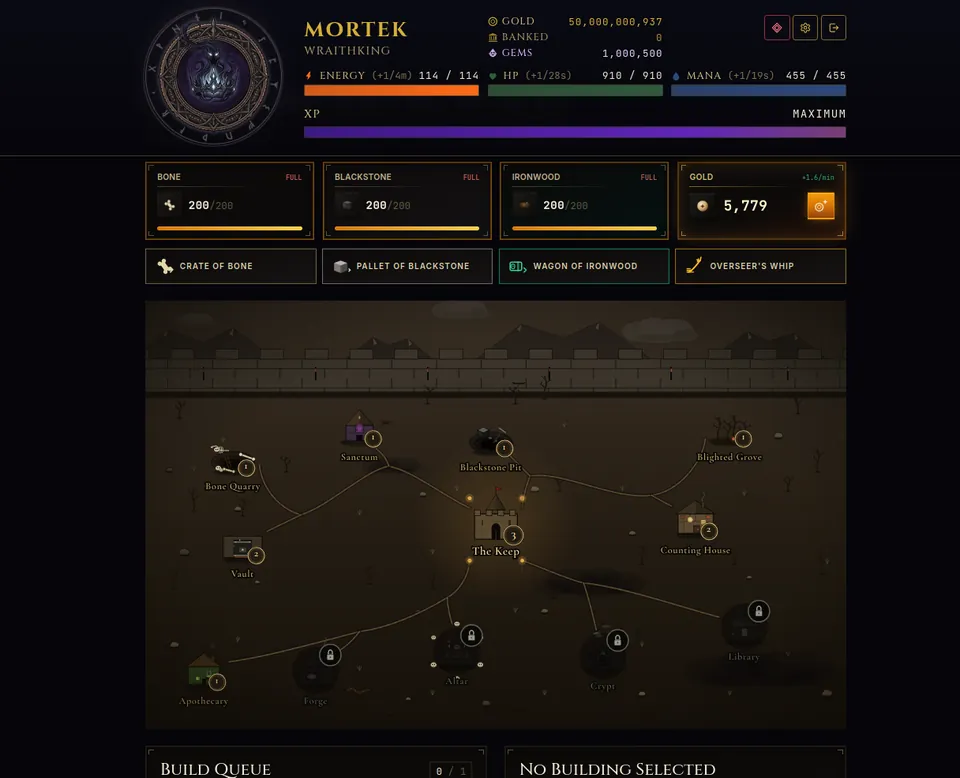
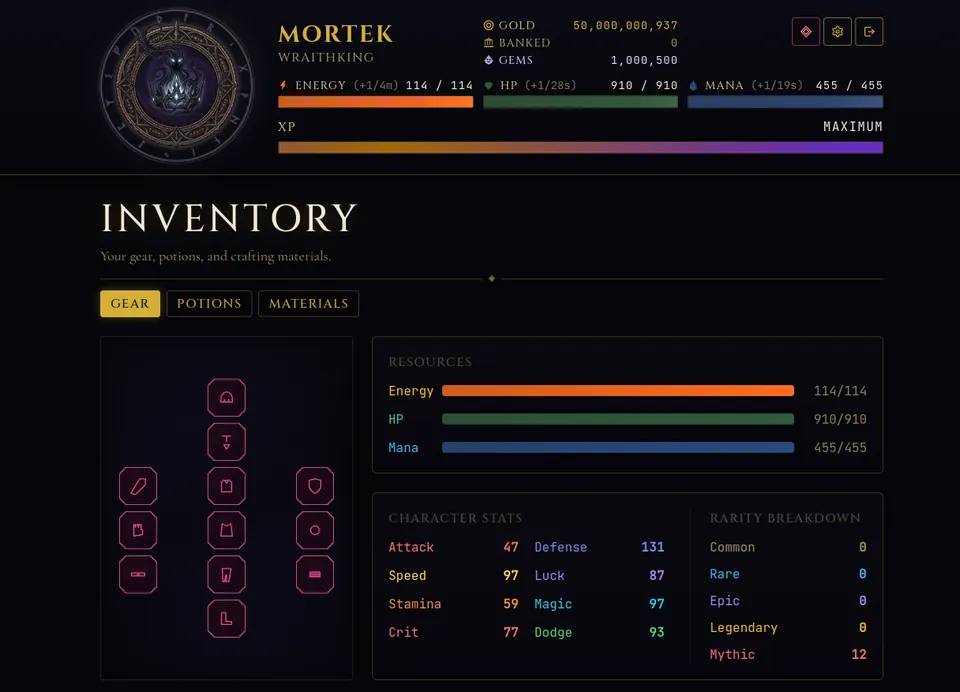

If you are looking for Shadowrealm beginner tips, you are in the right place. Shadowrealm: Age of Darkness is a free dark fantasy RPG that runs in your browser, and the first hour can feel like a lot: energy bars, ranks, cities, a stronghold, a jail. I am Maurice, the solo developer, and this is the order I would do things in if I were starting a fresh character today.
Everything below comes straight from the game's current rules, so the numbers are real. If you want the big picture of what the game is first, read What Is Shadowrealm? and come back.
Know what your three bars do
A new character starts with 100 gold, 10 energy, 100 HP and 50 mana, and every stat at 5. The three bars refill on their own, at different speeds:
- Energy regenerates 1 point every 5 minutes. Almost every action costs energy, so this is your real pacing limit.
- HP regenerates 1 point per minute.
- Mana regenerates 1 point every 30 seconds.
Because energy is slow, the best habit is simple: log in, spend your energy on the best action you can afford, and leave. Nothing is lost by closing the tab, and the bars keep refilling while you are away. Stamina on your gear raises your maximum energy, so a bigger pool means fewer wasted refills.
Commit actions in Ashenvale first
You begin in Ashenvale, an outpost at the edge of the wastes, and its six actions are all you need for the early ranks. Each action has a success chance with a floor of 5 percent and a ceiling of 95 percent. Every point of luck adds 0.5 percent and every point of attack adds 0.3 percent, so even a beginner build gets steadier as stats grow.
There is also a quiet familiarity bonus: repeating the same action builds a small bonus to its odds, and failed attempts count too, at half the rate of a success. Failing is not wasted either, because a failed attempt still pays a quarter of the XP a success would have paid.
Do not fear the jail, at first
Some actions are crimes, and a failed crime can put you in jail, which is a timed lockout. The game protects new players here: your first 30 actions can never send you to jail, whatever the roll says. After that, a sentence is something you can wait out, or another player can break you out.

Jail is also content, not just punishment. The Most Wanted list shows outlaws you can try to break out, and doing so builds a separate jailbreak rank. If you want to understand the whole crime loop before you take risks, the crime, stables and jail guide walks through it.
Claim your stronghold on day one
The single best thing you can do in your first session is claim the Forsaken Hold, your stronghold. You can claim it at rank 1, and it is an idle builder: it produces bone, blackstone and ironwood around the clock, plus gold from the Counting House, even when you are offline.

A few facts worth knowing before you spend resources:
- Upgrades take real time. The first upgrade takes about a minute, but the timers grow steeply and the last levels take days. Start a build before you log off.
- You begin with one build slot. The game allows up to three at once.
- Buildings go up to level 20, and a quarry makes about 2 resources per minute at level 1.
- The Keep gives a discount on build times, so it is a sensible early target.
- Shadowgems can skip a build timer, but nothing in the Hold requires them. The timers just run.
Learn the gear screen early
Your character has 12 equipment slots: weapon, offhand, helmet, chest, legs, boots, gloves, ring, amulet, belt, cloak and bracelet. Gear comes in rarities from common up to divine, and the stat panel shows attack, defense, speed, luck, stamina, magic, crit and dodge. Open the inventory regularly, because a new drop or crafted piece in an empty slot is the cheapest power you will ever get.

When you rank up you also earn 5 talent points per rank to spend on stats. Seven rank-ups from Peasant to Wraithking add up to 35 points, so choose a direction, for example luck if you want more reliable action results.
Practical habits that save time
- Do the daily and weekly quests. You hold 3 daily and 3 weekly quests at a time, and they are the easiest rewards in the game.
- Use the bank. Gold deposited earns up to 1 percent per day, and a deposit matures after 23 hours, so deposit before you log off.
- Do not travel for the sake of it. Travel has a 15 minute cooldown and each new city is gated by rank, so stay in Ashenvale until you outgrow it.
- Check the Black Market. Its six items rotate, so a quick look now and then can turn up a useful piece of gear or materials.
Once you are comfortable, the next question is what to prioritize. That is covered in how to rank up faster in Shadowrealm.
Rule of thumb for day one: claim the stronghold, start a build, spend your energy, bank your gold, log off.
Try it
Shadowrealm is free and needs no download, because it runs entirely in your browser. Create a character and run through the first tutorial steps; it takes a few minutes. Play free at playshadowrealm.com and say hello on the Discord if you get stuck.
Frequently Asked Questions
How fast does energy regenerate in Shadowrealm?
Energy regenerates 1 point every 5 minutes at the base rate, HP 1 point per minute and mana 1 point every 30 seconds. The bars keep refilling while you are logged out, so you lose nothing by leaving.
Can I go to jail on my first actions?
No. Your first 30 actions can never send you to jail, whatever the roll. After that a failed crime can jail you, and you either wait out the sentence or another player breaks you out.
Should I claim the stronghold right away?
Yes. You can claim the Forsaken Hold at rank 1, and it produces resources and gold even while you are offline. Start a build before you log off so the timer runs while you are away.